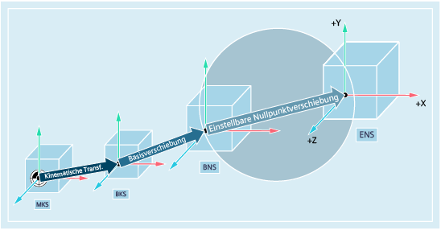
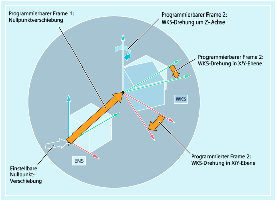

Durch die einstellbare Nullpunktverschiebung ergibt sich aus dem Basis-Nullpunktsystem (BNS) das "Einstellbare Nullpunktsystem" (ENS).
Einstellbare Nullpunktverschiebungen werden im NC-Programm mit den G-Befehlen G54 ... G57 und G505 ... G599 aktiviert.
Wenn keine programmierbaren Koordinatentransformationen (Frames) aktiv sind, dann ist das "Einstellbare Nullpunktsystem" das Werkstück-Koordinatensystem (WKS).
Manchmal erweist es sich als sinnvoll bzw. notwendig, innerhalb eines NC-Programms das ursprünglich gewählte Werkstück-Koordinatensystem (bzw. das "Einstellbare Nullpunktsystem") an eine andere Stelle zu verschieben und ggf. zu drehen, zu spiegeln und / oder zu skalieren. Dies erfolgt über programmierbare Koordinatentransformationen (Frames).
Beispiel: Programmierbare Koordinatentransformationen (Frames)
| Hinweis |
Programmierbare Koordinatentransformationen (Frames) beziehen sich immer auf das "Einstellbare Nullpunktsystem". |
Siehe auch:
Übersicht der verschiedenen Koordinatensysteme
Wie hängen die verschiedenen Koordinatensysteme zusammen?